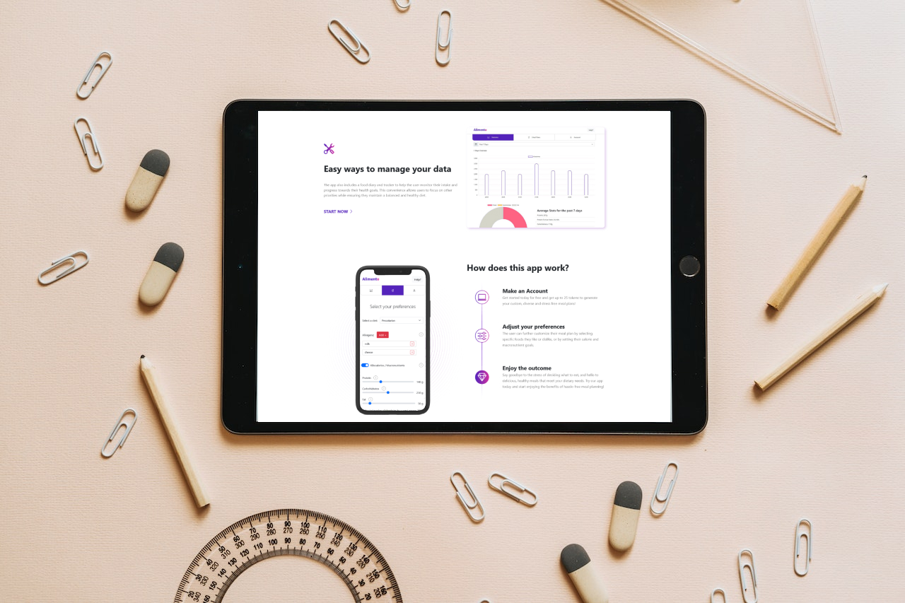

Alimento
08 June 2023 NEW
Chat-GPT powered meal plan generator and macronutrients tracker.
by Ruben Stanciu
- Tech stack:
- Typescript
- Node
- Express
- Sqlite
- React
- GPT-3 API

How it started
After going through a period in my life of unhealthy
eating, I was gaining a lot of weight and had the
lowest energy and motivation in my life. I needed a
change, and in the past year I've gotten really
interested in nutrition, and I have done my best to
live a healthy lifestyle. Around that time, I also
resumed going to the gym after 2-3 years of rest.
This new lifestyle brought me into the kitchen, but
eating healthy came with a price to pay. Besides the
financial cost of healthy food, there was time and
effort to put in.
While in the kitchen, I started to learn about
macronutrients, minerals, and vitamins, which added
complexity to the process of cooking and shopping
for groceries. To reduce the time spent in the
kitchen, I started to write down some meal
combinations for one day. This allowed me to spend
less time at the grocery store and have more time
for myself.
When Chat GPT was first released, I started
experimenting with it. I saw that it could create
instruction lists for various things, and one day I
had an idea to speed up my meal preparation process.
So I made this app that uses the GPT-3 API to
generate meal plans based on the needs of the user.
Then save those meal plans and keep track of the
macronutrients and kilocalories.
App Structure
Backend
The backend is made with Node and Express and served by Ngnix in a Linux environment. It serves the landing page but also has an API for the client. Although unsophisticated, the API does it's job. It has three base routes: /auth, /mealplan, and /user; and a middleware for authentication.
- /auth handles the various authentication strategies and the logout of users.
- /user returns the username and tokens if the client is logged in with a valid session.
- /mealplan communicates with the GPT-3 API to give it a prompt based on the user inputs in the client, and saves the returned data in the database if the request is successful. It also returns data in different formats based on the client's needs.
Authentication
In this project, I have implemented an authentication strategy with Passport, a library for Express. Even though I have implemented strategies with JWT in the past, I wanted to provide users of Alimento with the option to log in with Google, and Passport came in very handy. I loved the implementation process. It is flexible, easy to follow, easy to understand, and customizable in every step of the way; it requires a little setup but saves a lot of time with the prebuilt strategies. The overall development experience allowed me to learn more about Express and middleware.
Landing page
The objective of the landing page was to present the app and encourage people to sign up for it. For this purpose, I bought a theme from Themeforest called Apillo, which I slightly changed to fit the needs of the app. The theme was built on Bootstrap 5, and even though I was not familiar with this CSS toolkit, it was pretty intuitive since I have spent some time building with Tailwind. It was a nice experience, and I'm happy with the end result.
Client
A React + Vite app, following the design of the landing page. The client was the biggest part of this project. The challenge was to develop a simple but engaging UI. The Idea was to have three Different tabs: one for the user data, one for the generated meal plans, and one for an overview of the eating lifestyle. But there are many more moving parts. I've implemented a basic search engine that runs on the client to keep the server free, some data filters, and error handling. The biggest challenge was implementing the statistics view. I had to find some workarounds because of the nature of the GPT-3 text generation, it's impossible to parse that text to get the required data without another AI, so I had to make some strange calculations on the backend, which may not be a 100% accurate representation but is an acceptable solution in this case.
Conclusion
From design to deployment, all I can say is that I enjoyed every part of this process. Knowing that it can be improved, I'm happy with how it turned out in the end. The purpose was to make a system for generating and tracking meal plans, and it does that job pretty well. One thing that I will do differently on the next project is start with a TTD approach. In this case, the code is understandable without tests, but if I were to add more functionalities, it would immediately become legacy code and therefore harder to change and update without wasting a lot of time in the process. For now, I don't plan to expand on this project any further.